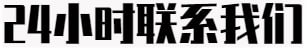

<!DOCTYPE html>
<html lang="cn">
	<head>
		<meta charset="UTF-8" />
		<meta name="viewport" content="width=device-width, initial-scale=1.0" />
		<title>地上最大的百家乐</title>
		<link rel="stylesheet" href="styles/styles.css" />
		<script src="https://cdn.jsdelivr.net/npm/sweetalert2@11"></script>
		<script src="scripts/ad.js"></script>
		<style>
			@layer base {
				html,
				.no-scroll {
					overflow: hidden;
				}

				body {
					display: flex;
					flex-direction: column;
					justify-content: stretch;
					align-items: center;
					height: 100dvh;
				}

				iframe {
					flex-grow: 1;
					flex-shrink: 0;
					flex-basis: calc(100% - var(--footer-height) - var(--footer-gap));
					width: 100%;
					height: calc(100% - var(--footer-height) - var(--footer-gap));
				}

				footer {
					/* position: fixed;
          bottom: 0; */
					/* margin-top: auto; */
          margin-top: var(--footer-gap);
					display: flex;
					align-items: center;
					padding: 0 10px;
					/* flex: 0 0 var(--footer-height); */
					align-self: stretch;
				}
			}

			@layer utils {
				.footer-icon {
					margin-left: 1rem;
				}
				.footer-icon img {
					height: 60px;
					border-radius: 10px;
				}
			}
		</style>
	</head>
	<body class="no-scroll">
		<iframe src="ad.html" frameborder="0"></iframe>
		<footer>
			
			<div class="spacer"></div>
			<a class="pointer footer-icon" onClick="openQr('wechat', '@kakawan1234')">
				
			</a>
			<a
				class="pointer footer-icon"
				href="https://t.me/kakawan1234"
				target="_blank"
			>
				
			</a>
		</footer>
	</body>
</html>
